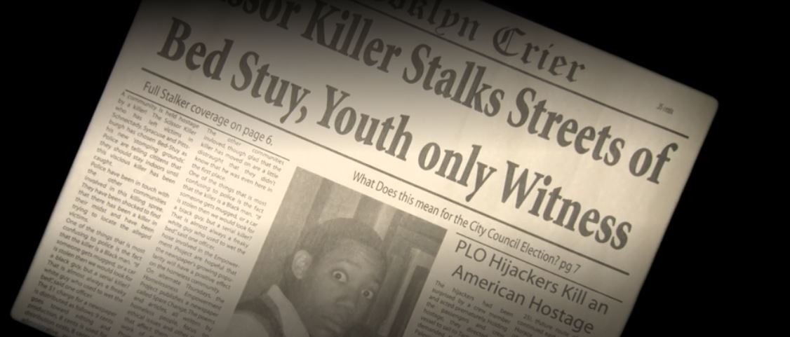
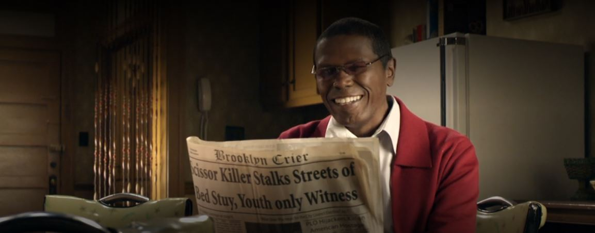

Chris e o Assassino da Tesoura
Durante a corrida para a votação, o jovem estudante, Chris Rock, estava apreensivo por não ter nada escrito debaixo da sua foto no álbum da escola. Ele não queria ir para outro colégio sem ter feito nada para ser lembrado e criar seu legado.
Com isso, Chris teve a brilhante ideia de entrar no jornal da escola.
Após entregar várias matérias e até uma história sugerida pelo seu amigo Doc, Chris criou um próprio acontecimento, inventando sobre um assassino que matava as pessoas a tesouradas.
O documentário foi tão impactante que a Senhorita Morello decidiu informar ao grupo de jornalismo da cidade para publicar também. Desse modo, a história do Chris teve grande notoriedade. Mas era tudo mentira
Vantagens para os negócios do Senhor Omar
Com todos na cidade morrendo de medo de sair às ruas por conta do criminoso, só havia uma pessoa feliz: o Senhor Omar
Depois da primeira candidatura do Lamar, os negócios do Senhor Omar caíram 35%, isso porque a taxa de homicídio caiu 35%. Para sua empresa de caixões alavancar, ele precisava que seu candidato se elegesse, o dono da loja de penhores Abe Himelfarb. Com isso, as mortes iriam voltar e seu negócio estaria em alta novamente.
Entretanto, suas expectativas foram frustadas depois do Lamar Johnson ganhar a eleição por conta da revelação de que a história do Chris foi mentira.